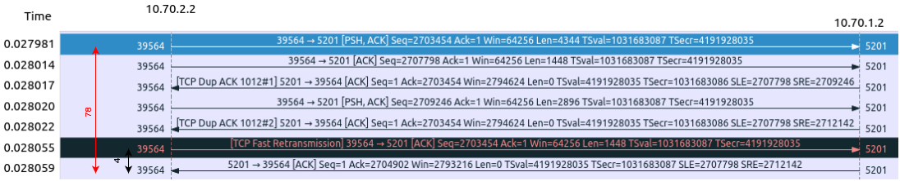
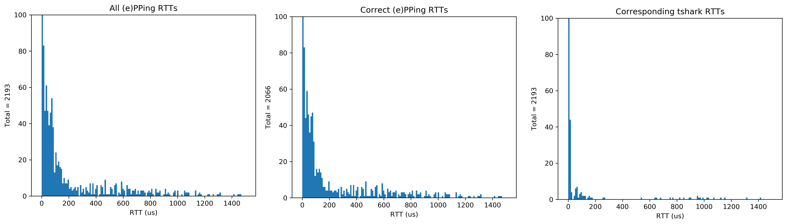
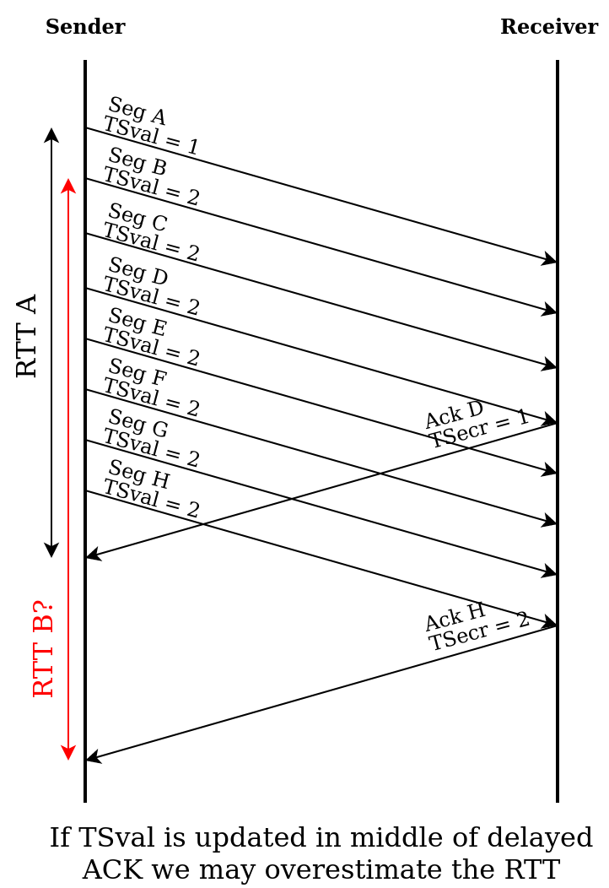
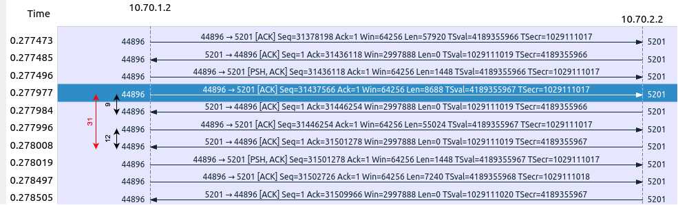
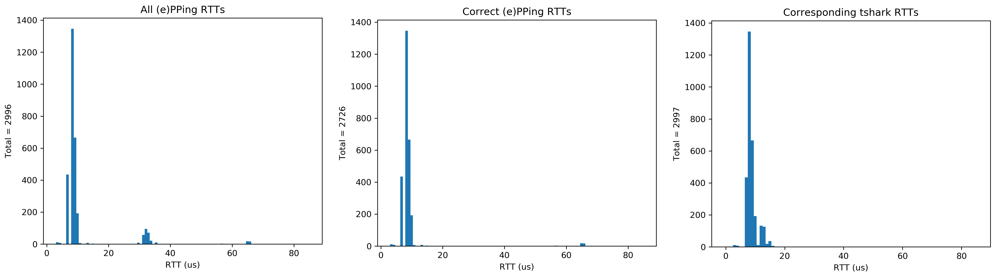

Progress update 2022-09-20
Simon Sundberg
Created: 2022-09-20 tis 14:57
1 Overview
- Red Hat Research Day in Brno
- Issues with TCP timestamp matching
- I've now experimentally verified them
- How to proceed?
- Minor ePPing fixes still pending review
- Courses and other stuff
2 Red Hat Research Day Brno
- Took up 3 days last week
- Think presentation itself went alright
- Screwed up time management
- Decent amount of sensible questions afterwards
- While some other talks were interesting, not relevant for ePPing
- Presentations were recorded and will be published
- Networking
- One Red Hatter was interested in trying ePPing out, had not clear use case
- Talked with some other people about eBPF, but not so much about ePPing
3 Issues with TSval/TSecr matching
RFC 7323 algorithm for how TSvals are echoed:
if (SEG.TSval > TS.Recent && SEG.SEQ <= Last.ACK.sent) TS.Recent = SEQ.TSval;- Have discovered 4 scenarios where matching first TSval with first TSecr may produce incorrect RTT
- Have experimentally verified the two most concerning ones
3.1 Retransmission shorter than TSval update rate

3.1.1 Example from packet trace

3.1.2 Example impact on RTTs

3.1.3 Comments
- Can only occur if RTT < TCP timestamp update rate
- Error could be upwards of TCP timestamp update rate
- TCP retransmission ambiguty, we cannot know the correct RTT
- Need to discard sample
- To solve need to track retransmissions and clear related TSval
3.2 TSval updated between ACKs

3.2.1 Example from packet trace

3.2.2 Example impact on RTTs

3.2.3 Comments
- May occur any time there's delayed ACKs
- Error could be upwards of TCP timestamp update rate
- Don't see any way to solve without tracking seq + ACK for each TSval…
- Seems more complicated than just matching on seq/ACK to begin with
3.3 First TSecr is lost

- Don't think this is a big issue
- Consistent with how it would behave for delayed ACK
3.4 Start monitoring in the middle of a flow

- Limited to first RTT of flow
- Could be solved by waiting for first change in TSval before timestamping
4 ePPing
- Heard from one of the LibreQoS guys today
- Wanted help with adding IPv6 support to xdp-cpumap-tc (declined)
- Still working on intergrating ePPing apparently
- Minor fixes from previous meeting
- Has not heard anything from Toke, will ping him
5 Courses
- CS Colloquium (1.5 ECTS)
- Peer reviewing in CS (2 ECTS)
- Litterature study (5 ECTS)
- Linux kernel programming (7.5 ECTS)
- Likely LP5, apparently some issues with finding time for Per
- Except kernel course, I can do the courses "whenever"
6 Other
- Red Hat report
- ISP update was accepted
- Salary ladder 25% point - reminder
- Attended first half of DAMI workshop
- Plan to go through LPC eBPF track
- eBPF summit 28-29/9